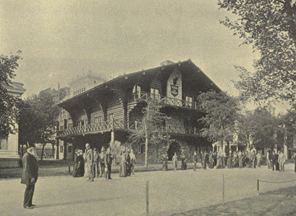
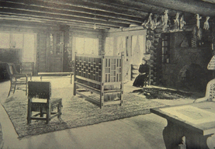

Idaho contributed one of the most important buildings for the Columbian Exposition for its effect on American architecture of the next generation. The interior furnishings also are major precursors of the Arts & Crafts furnishing style that found a widespread appeal in the early 20th century. Visited by an estimated 18 million people during the summer of 1893, this building and its furnishings has been largely ignored by scholars of the American Arts & Crafts Movement.
The Columbian Exposition of 1893 in Chicago, with 27 million visitors, had a profound influence on American architecture and decorative arts. While the main buildings were mostly Neo-Classical in style, the fair committee suggested that the state buildings represent the style of the American colonies. Many of the state buildings represented American domestic architecture, and some were early examples of the Colonial Revival. Some more literally replicated historic buildings, such as Independence Hall (Pennsylvania), Washington's Headquarters at Morristown (New Jersey), the John Hancock House (Massachusetts), and Mt. Vernon (Virginia). The latter was the most faithful reproduction and was criticized as lacking the imagination and grace of some of the freely adapted designs. McKim, Mead & White designed the New York building, styled after the Villa Medici in Rome, Italy, but it was uniformly described in the guide books as replicating the "old Van Rensselaer Mansion" in lower Manhattan, "a great substantial building [which] recalls the sturdy and ceremonius days of the 'Good Old Colony Times.'"
One of the largest of the state buildings at the Columbian Exposition was the California Building by A. Page Brown, designed in a "Mission" style. This building is credited for helping to link the ideas of the Arts & Crafts Movement with the style of the southwestern missions in the public mind. A. Page Brown also served as the architect in 1894 of the Swedenborgian Church of the New Jerusalem in San Francisco, California. The simple wooden chairs with rush seats designed for this building are often given credit as the prototype of American Arts & Crafts furniture (often called "Mission" furniture), after the design was copied for manufacture in New York. ("The Arts & Crafts Movement in California: Living the Good Life," the Oakland Museum, 1993, p. 13 and 58.) The date of the Swedenborgian Church commission is often used as the starting date of the Arts & Crafts Movement in America, rather than a benchmark of the maturing of a style that had its roots as early as the 1870's.
It is surprising that more attention has not already been given by scholars of the Arts & Crafts Movement to the Idaho Building at the Columbian Exposition. Designed by K.K. Cutter of Spokane, Washington, the building was compaired to a frontier log cabin, and to a Swiss chalet, but the strength of the massive log and stone construction also prefigures many later Arts & Crafts Movement buildings, including The Log House at Craftsman Farms in Morris Plains, New Jersey, Gustav Stickley's own home built in 1908 - 1910. Whether or not Gus Stickley was among the estimated 18 million who visited the Idaho Pavilion during the Fair in 1893, a man as interested in architecture and design as Stickley was undoubtedly aware of this building from photographs in the countless guidebooks and publications about the Fair.

In "Shepp's World's Fair Photographed" (by James and Daniel Shepp, Chicago and Philadelphia: Globe Bible Publishing Co., 1893), the building is described as follows. "The Idaho Building is Colonial in style, though the territory was unknown when our bathers were early connected with Great Britain by colonial ties . . .
. . . It is well that the children who come here should see these rooms. They teach the lesson of the growth of our national civilization, and how, step by step, men have made their way in life, as well as something of the costs of the luxuries that we now enjoy. when the foundations of a nation's civilization are bared before our eyes, we are apt to judge, with greater acumen, the value of the superstructure. The foundation, then is here before us, in the cabin and log hut." (pp 370 - 372)
Of particular interest is the furniture in the Womans Reception Room that encorporates an eclectic blend of English, German and Japanese influences, but the heavy construction and the fringed leather upholstery with heavy tack heads gave an overall Western feeling that reflected the frontier theme of the building. This furniture was exhibited before the completion of the Swedenborgian Church in San Francisco (and seen most likely by A. Page Brown, architect of the California Building, and perhaps also by Gus Stickley), and it was widely published in guides to the Fair in 1893.
The Idaho Building, and the furnishings of the Woman's Reception Room in particular, are noteworthy examples of American Arts & Crafts Movement design, worthy of further exploration.
Notes: Information about the Idaho Building has been published in "Idaho Yesterdays," v. 24, no. 2, Summer 1980, pp. 24 - 29.
Furniture designs for the Idaho Building at the World's Columbian Exposition, Chicago, 1893, drawn in pencil on tracing paper, are located in MS 356, Box 13, Item 2a, at the Idaho State Historical Society Historical Library and Archives in Boise, Idaho.
 Return
to Founders of the Arts & Crafts Movement Page
Return
to Founders of the Arts & Crafts Movement Page